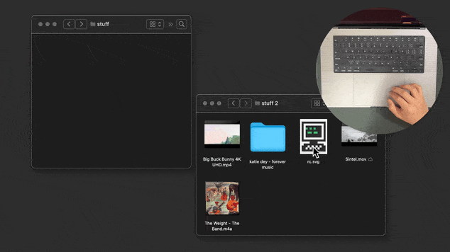

Notes

An interactive quine
What if the user interface was the source code? What if the source code was the user interface?

Adding weight to drag and drop in macOS Finder
I modified the basic drag and drop interaction to make it respond to file size.
Letting go of frameworks and how that feels
Starting over again is a crucial process.
Hello, again
A new era of personal website.
Now
working on something mysterious :)
Elsewhere
About Me
A hand-drawn illustration. In the center: A smiling cartoon face, bisected by a wavy line.
On the botton: A retro personal computer. To the left: A hand holding a balloon, a square, a circle, a star, a
crescent moon. To the right: A zero, an X, a triangle, two angle brackets, a curly brace, and a mouse.
I’m scouting out and exploring the desire paths we carve in the world of computing, interaction, and design.
From January to March, I was enrolled at the Recurse Center.